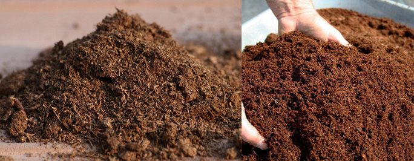
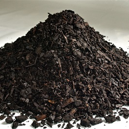
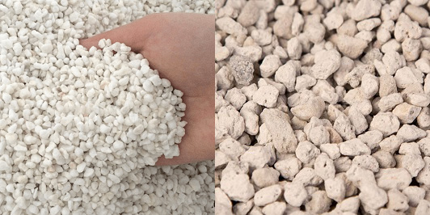
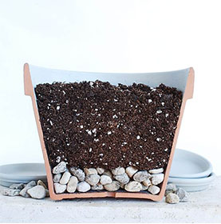
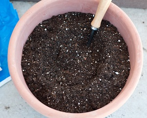

Soil is one of the most basic components vital to enhance the growth of any plant. It provides not only support for the plant, but also boosts the intake of nutrients and water. The role of this article is to inform you all about the core elements of which commercial soil mixtures are comprised of, and then teach you how you can make a custom potting soil on your own.
Regarding to the list of necessities a plant needs for a healthy life, the soil is one of the least important ones. In essence, a plant needs only water, nutrients (such as phosphorus, magnesium, etc.) and sunlight to grow. Soil only provides a way for the plant to anchor itself with its roots and absorb the water and the nutrients more easily as if there was no soil. The soil therefore only acts as a support for the plant and as a medium to boost the intake of the nutrients and water.
Plants are different from one another in their needs. Succulents, for instance, may die out if they are exposed to too much moisture, whereas water-loving plants may die if their soil does not consist of enough peat. Therefore, not all plants can equally thrive in the same potting soil mixture. Different plants require different potting soils for their growth.
Whatever the type, most commercial potting soils contain four essential ingredients:
peat moss (left) or coconut fibre (coco coir) (right): Both of these hold moisture and release it slowly to keep the roots moist for longer periods. The main difference between them is that peat moss takes much longer to be produced, as it is a result of hundreds of years of decomposition and is gathered from the swamps, whereas the coconut fibre is obtained from the fibres of coconuts, making it much more environmentally friendly.
pine bark: Keeps the soil moist, moderates soil temperature. and improves air circulation due to its rough texture. Furthermore, it gradually decomposes and adds more humus to the soil.
drainage agent, either perlite (left) or pumice (right): It improves the aeration of the soil. It is wise to note that although harder to find on the market, pumice is better at this task, as it doesn't float to the surface of the soil after continuous watering. Perlite, on the other hand, is more affordable, but requires more regular repotting, as watering the plant also causes the perlite to surface.
Depending on the plant, different ratios of the above ingredients are mixed to achieve the best possible soil for the plant in question. If you desire, you can prepare a potting mix on your own, or you can buy one from the shop. The two most common potting soils are:
However, there are many more variants of potting soils on the market. Whatever the type, just keep in mind to read what it comprises of. If it includes a high amount of peat or coconut fibre, it is suitable for water-loving plants, whereas if it includes a lot of drainage agents, it is more appropriate for succulents and cacti.
For the widest variety of plants, a mixture that is similar to regular potting soil will provide all the necessary growth conditions.
When mixing ingredients for the regular potting soil, referring to the guideline in this image may be helpful:
So, in the first part of this tutorial, we will create a regular potting soil mixture. First, take a bowl which will be used for preparing our soil mixture. For this mixture, you will first need to add 60% of either peat moss or coconut fibre (do note that these percentage values are referring to the volume of the pot which is used for planting). In terms of growth conditions, peat moss might be slightly better than coconut fibre (also called: coconut coir). However, since peat moss takes hundreds of years to be produced in swamps, using coconut coir, which is produced from the fibres of coconuts, is a significantly more environmentally friendly option.
Then, add roughly 40% of drainage agent, be it perlite or pumice. In terms of their efficiency, pumice is better than perlite, as it does not have the tendency to surface after the plant is watered. Due to this disadvantage, the plants potted in a mixture that includes perlite as the drainage agent must be repotted more often compared to plants that are planted inside a mixture that contains pumice.
If the plant to be potted requires a specific acidity range for growth, make sure to read through [THIS] tutorial to find out how to change the pH of the soil mixture accordingly.
Now, all there is left to do is to thoroughly mix up the contents in the bowl. The regular potting soil mixture is ready!
Succulents and cacti require rather arid growth conditions. Therefore, to achieve such an environment, a lot of drainage agents need to be added to the mixture so that the water is drained as soon as possible from the mixture. If the mixture was moist for too long, there is a great chance that the potted succulent plant would die.
First, add about 30% peat moss or coconut coir to the bowl. Then, supplement that by about 70% drainage agent, either pumice or perlite. Due to pumice being chunkier and less prone to breaking down, we highly suggest using the pumice or any other pumice-like drainage agent instead of perlite, which is much more fragile. Some horticultural sand may even be added to even further simulate the natural growth conditions of succulents/cacti plants.